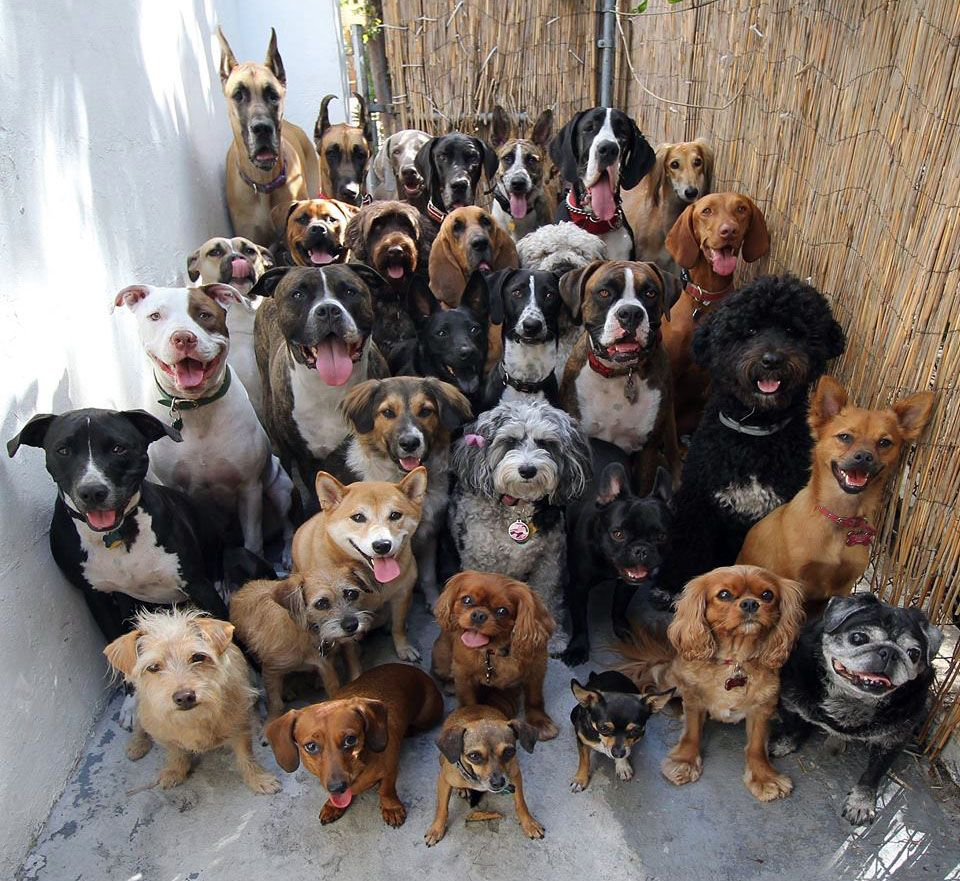

Somos el puente entre quienes quieren ayudar y los animales que necesitan ese apoyo.

Animara Fundación para Animales nace con el propósito de ampliar el impacto del rescate animal, apoyando a rescatistas que ya están en campo pero que carecen de recursos para seguir adelante.
Actuamos como canalizadores eficientes de recursos: recibimos donativos, los optimizamos comprando por volumen con proveedores aliados y los convertimos en alimentos, medicinas e insumos que llegan directamente a los refugios.
Creemos que los verdaderos héroes son quienes dedican su vida al rescate animal. Nuestro trabajo es hacerles más fácil ese camino.
Quiero apoyarLos tres pilares de nuestra fundación
Trabajamos directamente con refugios establecidos para garantizar que reciban los insumos que más necesitan, de forma regular y predecible.
Los rescatistas independientes son los héroes invisibles. Les damos acceso a recursos que de otra forma estarían fuera de su alcance.
Cada donativo se transforma en vacunas, visitas veterinarias, alimento continuo y mejoras en las instalaciones de los refugios.
Cada donativo suma a este resultado
Las donaciones se destinan a cosas concretas y verificables
Esquemas completos de vacunación para proteger a los animales rescatados.
Visitas y consultas médicas para atender enfermedades y urgencias.
Remodelaciones y mejoras en las instalaciones para mayor bienestar.
Suministro continuo de alimento de calidad para canes y felinos.
"Cada animal merece una oportunidad. Cada donativo es esa oportunidad."— Equipo Animara Fundación
Para mantener la confianza de nuestra comunidad